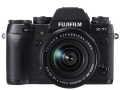

器材库 > APS及其以下画幅可换镜头数码相机 > X-T1 套机

规格总览
产品类型
APS画幅可换镜头数码相机
发布日期
2014-01-28
厂家推荐价格
150,000.00 （日元）
影像规格
影像传感器
X-Trans CMOS II
影像传感器尺寸
23.6 x 15.6mm
总像素
1670万
有效像素
1630万
影像处理器
EXR 处理器 II
低通滤镜
无
最大解像度
4896 x 3264
静态图像尺寸
L: (3:2) 4896 x 3264 / (16:9) 4896 x 2760 / (1:1) 3264 x 3264；M: (3:2) 3456 x 2304 / (16:9) 3456 x 1944 / (1:1) 2304 x 2304；S: (3:2) 2496 x 1664 / (16:9) 2496 x 1408 / (1:1) 1664 x 1664
静态图像格式
JPEG, RAW, RAW+JPEG
画幅比
3:2, 16:9, 1:1
短片尺寸
1920 x 1080 60p/30p，1280 x 720 60p/30p，
短片格式
MOV, MPEG4-AVC/H.264
短片音效
线性PCM立体声
除尘系统
传感器清洁系统
镜头和对焦
镜头卡口
Fujifilm XF
对焦系统类型
混合自动对焦（相位侦测/对比度检测自动对焦）
对焦点
49点
对焦模式
单次自动对焦 / 连续自动对焦 / 手动对焦
AF辅助灯
有
手动对焦
支持
曝光控制
测光系统
TTL 256-测光
测光模式
中央重点测光, 多分区评价测光, 点测光
曝光模式
P（程序自动曝光）, A（光圈优先自动曝光）, S（快门速度优先自动曝光）, M（手动测光曝光）
快门类型
焦平面快门
快门速度
30秒至1/4000秒
闪光同步速度
1/180秒秒
曝光补偿
±3 或 ±2EV以1/3EVEV级调整
ISO感光度
200, 400, 800, 3200, 6400, 可扩展至12800, 可扩展至100, 可扩展至25600, 可扩展至80-51200
白平衡
白炽灯, 阴天, 荧光灯H, 晴天, 水下, 荧光灯L, 荧光灯（日光）, 荧光灯（暖白色）
自拍
10秒, 2秒
连拍
每秒8.0帧（JPEG：最多约47幅）;每秒3.0帧（JPEG：达到存储卡的最大容量）
取景器/显示屏
取景器
OLED电子取景器
取景范围
100%
取景放大倍率
0.77倍
屈光度调节范围
-4m-1 to +2m-1
LCD类型
TFT LCD
LCD尺寸
3.0英寸
LCD像素
104万
视野率
100%
文件输入/输出
存储卡
SD/SDHC, SDXC
数据接口
USB2.0, Mini USB
视频/音频接口
HDMI Mini 输出
无线功能
Wi-Fi
电源
电池
NP-W126锂离子电池
续航能力
约350幅
外接电源
垂直手柄VG-XT1
机身规格
材质
镁合金
颜色
黑色
尺寸
129.0 x 89.8 x 46.7mm
重量
390g
美家最小妹2014-07-31 14:584.63 分
操作性 4.50功能性 5.00美观性 5.00趣味性 4.50耐用性 5.00性价比 4.00解像力 4.50色彩还原 4.50
产品图 / 样片
1
评测 / 相关文章
- 取景器再升级 富士X-T1详细评测 （存档）